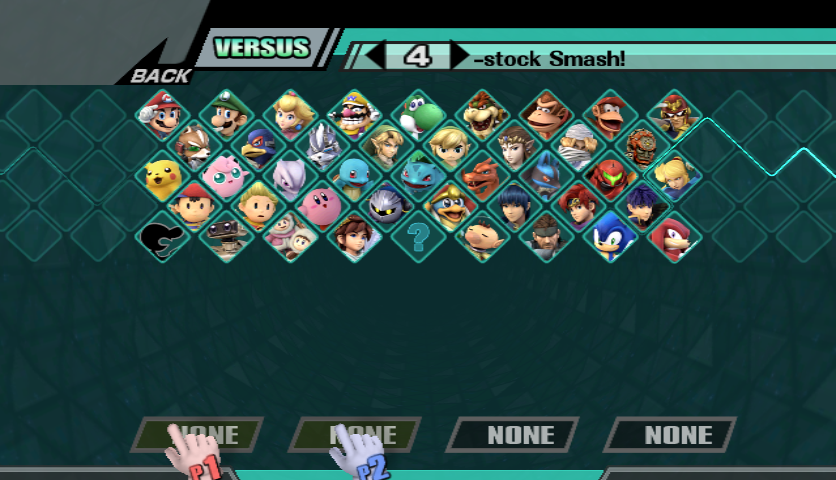
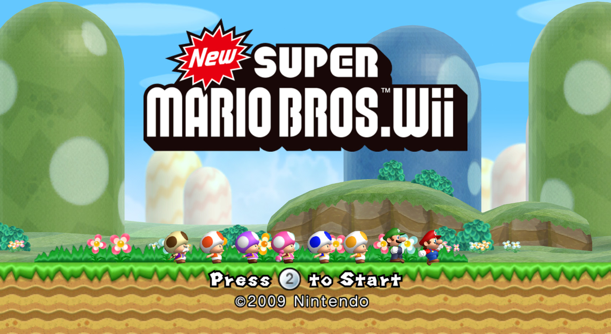

← Back to RiftWii
MOD INSTALLATION
Installing Mods
RiftWii supports installing multiple mod types, whether that be:
- Riivolution-Format Mods like Newer Super Mario Bros. Wii or Retro Rewind
- Gecko Code Builds like Project+
- Cheat Codes
RiftWii supports it all! With the exception of CTGP-R 1.03 being experimental at the time of writing this.
Read the official Mods, Cheats and game-page guide
Click to Install Riivolution-Format Mods
Click to Install Gecko Code Builds
Click to Install Cheat Codes
RIIVOLUTION FORMAT
Installing Riivolution-Format Mods
Riivolution-Format mods include mods such as Newer Super Mario Bros. Wii and Retro Rewind.
Step 1
Copy your mod folder to the root of your SD Card or USB Drive, and the .xml file to the Riivolution folder. It should look like this:
SD Card or USB Drive
├── apps/
├── [MOD NAME FOLDER]/
└── riivolution/
└── MOD NAME.xml
Step 2
Open the game's own page in RiftWii and select the Mods tile.

Step 3
Turn on the mod you want to use:

Step 4 - Launch and Play
Go back and start the game. Enjoy!
GECKO CODE BUILDS
Installing Gecko Code Builds
This section will explain how to install Gecko Code Builds such as Project+ and REX.
Note: If your SD Card is bigger than 32GB, or you want to store mods on your USB Device, follow the Virtual SD Card Guide instead:
Using Virtual SD Cards
Step 1
Put your mod files onto the root of your SD Card. It should look like:
SD Card
├── apps/
├── codes/
└── [MOD NAME FOLDER]/
Note: It has to be on the SD Card or your mod will not work.
Step 2
Open the game's own page in RiftWii and select the Mods tile.
Step 3
Turn on the mod that you have chosen. If it doesn't automatically detect a mod, select Add a code build... and locate the [GAME CODE].gct file on your SD Card (in this case, it's Smash Brawl, so it's RSBE01.gct)

Step 4 - Choose how to start the code build
Press Start while the code mod is enabled.
RiftWii will ask whether to launch With extras or
Without extras. Choose the option you want to use for this launch.

Step 5 - Launch and Play
Start the game and enjoy!

CHEAT CODES
Installing Cheat Codes
This section will explain how to install and use Cheat Codes with RiftWii.
Step 1
Open the game's own page in RiftWii, select the Cheats tile, and choose the cheats you want to enable.

Step 2 - Set Gecko X values
Some Gecko cheats contain editable values shown as X, Y, and other letters.
If a cheat needs these values, turn it on and select Set values.
RiftWii will show the cheat's notes underneath the list so you can see what each value controls.

Step 3 - Enter the value
RiftWii will ask for each value one at a time.
Enter the hexadecimal value using the on-screen keypad, then select OK.
The number of required digits is shown in the title. If the cheat has more than one editable value,
such as X and Y, RiftWii will ask for each one in sequence.

Step 4 - Review or change the values
After saving them, the current values appear under the cheat.
Select Change at any time if you want to edit the X, Y,
or other values again. The cheat remains enabled with the values you saved.

Step 5 - Launch and Play
Go back and start the game. Enjoy!

Notice:
If you don't have internet, download the cheats manually in the usual text format and save the file as sd:/riftwii/cheats/<game ID>.txt. Then open the game's Cheats tile and activate the codes you want.
Download Cheat Codes Manually